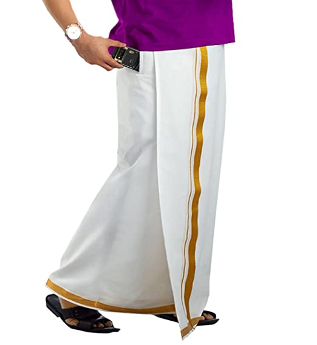
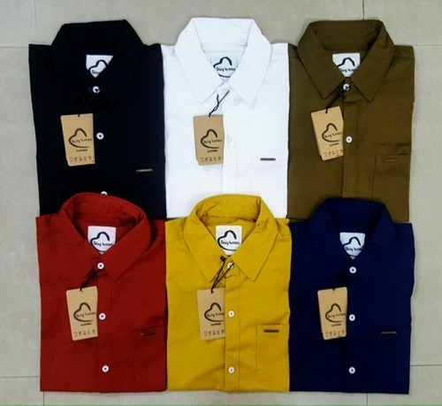
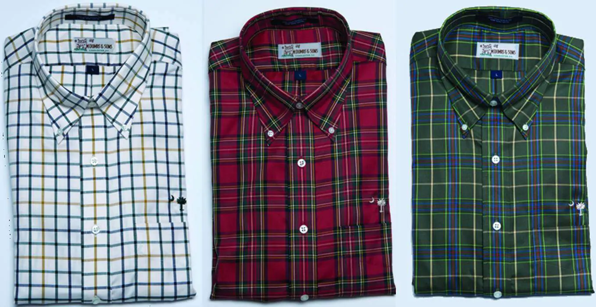

OUR SERVICES




Next Generation Garments in Kumbakonam. Readymade Garment Retailers with Address, Contact Number, Photos, Maps. View Next Generation Garments, Kumbakonam on Justdial.
Established in the year 2013, Next Generation Garments in Kumbakonam Ho, Kumbakonam is a top player in the category Readymade Garment Retailers in the Kumbakonam. This well-known establishment acts as a one-stop destination servicing customers both local and from other parts of Kumbakonam. Over the course of its journey, this business has established a firm foothold in it’s industry. The belief that customer satisfaction is as important as their products and services, have helped this establishment garner a vast base of customers, which continues to grow by the day. This business employs individuals that are dedicated towards their respective roles and put in a lot of effort to achieve the common vision and larger goals of the company. In the near future, this business aims to expand its line of products and services and cater to a larger client base. In Kumbakonam, this establishment occupies a prominent location in Kumbakonam Ho. It is an effortless task in commuting to this establishment as there are various modes of transport readily available. It is at Mutt Street, First Floor KRC Complex, Near Papular Super Market, which makes it easy for first-time visitors in locating this establishment. It is known to provide top service in the following categories: Readymade Garment Retailers, Readymade Garment Wholesalers, Men Readymade Garment Retailers, T Shirt Retailers, Sunglass Dealers, Shirt Retailers, Shirt Wholesalers, Men Readymade Garment Wholesalers.
OUR SERVICES
CONTACT US